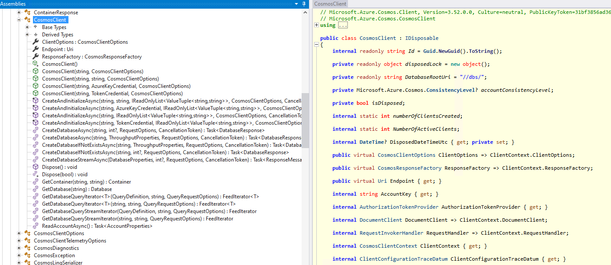

Azure Cosmos DB is a fully managed NoSQL database service that provides global distribution, elastic scaling, and multi-model support with comprehensive SLAs for throughput, latency, availability, and consistency. It offers multiple APIs including SQL (Core), MongoDB, Cassandra, Gremlin, and Table, making it highly versatile for various application patterns.
📚 Table of Contents
📋 Overview
🔧 Available Approaches
SQL API (Core)
MongoDB API
Other APIs
📦 Key Libraries
Primary Library
Supporting Libraries
⚡ Basic Operations
Setting Up a Cosmos Client
Managing Databases and Containers
Working with Items
🔄 CRUD Operations
Query (Read)
Create
Update
Delete
🚀 Advanced Patterns
Bulk Operations
Change Feed Processing
Server-Side Programming
Retry Policies
Dependency Injection Setup
🔐 Authentication Approaches
🔄 Migration from Legacy SDK
🔗 Useful Resources
📝 Summary
🔧 Available Approaches
1. SQL API (Core)
Native JSON document model with rich SQL querying capabilities
Recommended for new applications with flexible schema requirements
Primary C# SDK: Microsoft.Azure.Cosmos
Best performance and feature support
2. MongoDB API
MongoDB-compatible API for existing MongoDB applications
Use standard MongoDB drivers and tools
No code changes required for MongoDB applications
C# SDK: MongoDB .NET Driver
3. Other APIs
Cassandra API: For existing Cassandra workloads (CassandraCSharpDriver)
Gremlin API: For graph databases (Gremlin.Net)
Table API: For Table Storage compatibility
Recommended: Use unified Microsoft.Azure.Cosmos SDK
Alternative: Azure.Data.Tables for Azure Table Storage
<!-- For SQL API (Recommended) --><PackageReference Include="Microsoft.Azure.Cosmos" Version="3.37.0" /><!-- For MongoDB API --><PackageReference Include="MongoDB.Driver" Version="2.22.0" /><!-- For Table API (if not using unified Cosmos SDK) --><PackageReference Include="Azure.Data.Tables" Version="12.8.0" />
<!-- For dependency injection --><PackageReference Include="Microsoft.Extensions.DependencyInjection" Version="7.0.0" /><PackageReference Include="Microsoft.Extensions.Configuration" Version="7.0.0" /><!-- For managed identity authentication --><PackageReference Include="Azure.Identity" Version="1.10.4" />
⚡ Basic Operations
Setting Up a Cosmos Client
The CosmosClient class is the primary interface for interacting with Azure Cosmos DB SQL API. It provides a thread-safe client that manages connections, handles retries, and implements the Azure Cosmos DB protocol.

alt text
using Microsoft.Azure.Cosmos;// Connection using endpoint and key (basic example)var endpoint ="https://your-account.documents.azure.com:443/";var key ="your-primary-key";var cosmosClient =newCosmosClient(endpoint, key,new CosmosClientOptions{ ConnectionMode = ConnectionMode.Direct, SerializerOptions =new CosmosSerializationOptions{ PropertyNamingPolicy = CosmosPropertyNamingPolicy.CamelCase}});
Key CosmosClientOptions
The CosmosClient behavior can be customized with CosmosClientOptions:
// Create or get a databaseDatabase database = await cosmosClient.CreateDatabaseIfNotExistsAsync("MyDatabase");// Create container with RU/s provisioning and partition keyContainerProperties containerProperties =new ContainerProperties{ Id ="MyContainer", PartitionKeyPath ="/partitionKey",// Optional: configure indexing policy IndexingPolicy =new IndexingPolicy{ Automatic =true, IndexingMode = IndexingMode.Consistent, IncludedPaths ={new IncludedPath { Path ="/*"}}, ExcludedPaths ={new ExcludedPath { Path ="/path/to/exclude/*"}}}};// Create with 400 RU/s throughputContainer container = await database.CreateContainerIfNotExistsAsync( containerProperties, ThroughputProperties.CreateManualThroughput(400));
Working with Items
In Azure Cosmos DB’s SQL API, you work with “items” - JSON documents with unique IDs:
// Define a model classpublicclass TodoItem{[JsonProperty("id")]publicstring Id {get;set;}= Guid.NewGuid().ToString();[JsonProperty("partitionKey")]publicstring PartitionKey {get;set;}publicstring Title {get;set;}publicbool Completed {get;set;}public DateTime CreatedDate {get;set;}= DateTime.UtcNow;}// Alternative: Using System.Text.Json attributespublicclass TodoItemWithSystemTextJson{[JsonPropertyName("id")]publicstring Id {get;set;}= Guid.NewGuid().ToString();[JsonPropertyName("partitionKey")]publicstring PartitionKey {get;set;}publicstring Title {get;set;}publicbool Completed {get;set;}public DateTime CreatedDate {get;set;}= DateTime.UtcNow;}
🔄 CRUD Operations
Query (Read)
CosmosDB SQL API provides a rich SQL-like query language for JSON documents. You can query using strongly-typed entities, dynamic objects, or raw JSON responses:
// 1. Point read by ID and partition key (most efficient)try{ ItemResponse<TodoItem> response = await container.ReadItemAsync<TodoItem>( id:"task-1", partitionKey:newPartitionKey("personal")); TodoItem item = response.Resource; Console.WriteLine($"Retrieved item: {item.Title}, RUs consumed: {response.RequestCharge}");}catch(CosmosException ex)when(ex.StatusCode== HttpStatusCode.NotFound){ Console.WriteLine("Item not found");}// 2. SQL QueryQueryDefinition query =newQueryDefinition("SELECT * FROM c WHERE c.partitionKey = @partitionKey AND c.completed = @status").WithParameter("@partitionKey","personal").WithParameter("@status",false);FeedIterator<TodoItem> resultSet = container.GetItemQueryIterator<TodoItem>( query, requestOptions:new QueryRequestOptions{ MaxItemCount =10, PartitionKey =newPartitionKey("personal")});double totalRequestCharge =0;List<TodoItem> results =new List<TodoItem>();while(resultSet.HasMoreResults){ FeedResponse<TodoItem> response = await resultSet.ReadNextAsync(); totalRequestCharge += response.RequestCharge; results.AddRange(response.ToList());}Console.WriteLine($"Found {results.Count} items, total RU consumed: {totalRequestCharge}");// 3. LINQ query using Microsoft.Azure.Cosmos.Linq;IOrderedQueryable<TodoItem> linqQueryable = container.GetItemLinqQueryable<TodoItem>();var query = linqQueryable.Where(t => t.PartitionKey=="personal"&&!t.Completed).OrderBy(t => t.CreatedDate);using FeedIterator<TodoItem> linqResultSet = query.ToFeedIterator();while(linqResultSet.HasMoreResults){foreach(var item in await linqResultSet.ReadNextAsync()){ Console.WriteLine($"{item.Title}: {item.CreatedDate}");}}
Working with Dynamic Entities
You can work with dynamic objects when you don’t want to define strongly-typed classes:
// 1. Point read with dynamic objectItemResponse<dynamic> dynamicResponse = await container.ReadItemAsync<dynamic>( id:"task-1", partitionKey:newPartitionKey("personal"));dynamic item = dynamicResponse.Resource;Console.WriteLine($"Title: {item.title}, Completed: {item.completed}");// 2. Query with dynamic objectsQueryDefinition dynamicQuery =newQueryDefinition("SELECT * FROM c WHERE c.partitionKey = @partitionKey").WithParameter("@partitionKey","personal");FeedIterator<dynamic> dynamicResultSet = container.GetItemQueryIterator<dynamic>( dynamicQuery, requestOptions:new QueryRequestOptions{ PartitionKey =newPartitionKey("personal")});while(dynamicResultSet.HasMoreResults){ FeedResponse<dynamic> response = await dynamicResultSet.ReadNextAsync();foreach(dynamic item in response){ Console.WriteLine($"ID: {item.id}, Title: {item.title}");}}// 3. Creating items with dynamic objectsdynamic newDynamicItem =new{ id ="dynamic-task-1", partitionKey ="personal", title ="Task created with dynamic object", completed =false, tags =new[]{"dynamic","example"}};await container.CreateItemAsync<dynamic>( newDynamicItem,newPartitionKey("personal"));
Working with Raw JSON Responses
For maximum flexibility, you can work directly with JSON strings:
// 1. Query returning raw JSON streamQueryDefinition jsonQuery =newQueryDefinition("SELECT * FROM c WHERE c.partitionKey = @partitionKey").WithParameter("@partitionKey","personal");FeedIterator jsonIterator = container.GetItemQueryStreamIterator( jsonQuery, requestOptions:new QueryRequestOptions{ PartitionKey =newPartitionKey("personal")});while(jsonIterator.HasMoreResults){using ResponseMessage response = await jsonIterator.ReadNextAsync();if(response.IsSuccessStatusCode){using StreamReader reader =newStreamReader(response.Content);string jsonContent = await reader.ReadToEndAsync(); Console.WriteLine($"Raw JSON Response: {jsonContent}");// Parse manually if neededusing JsonDocument document = JsonDocument.Parse(jsonContent); JsonElement root = document.RootElement;if(root.TryGetProperty("Documents",out JsonElement documents)){foreach(JsonElement item in documents.EnumerateArray()){if(item.TryGetProperty("title",out JsonElement title)){ Console.WriteLine($"Title from JSON: {title.GetString()}");}}}}}// 2. Point read with raw JSONusing ResponseMessage jsonResponse = await container.ReadItemStreamAsync("task-1",newPartitionKey("personal"));if(jsonResponse.IsSuccessStatusCode){using StreamReader reader =newStreamReader(jsonResponse.Content);string itemJson = await reader.ReadToEndAsync(); Console.WriteLine($"Raw JSON Item: {itemJson}");}// 3. Create item with raw JSONstring newItemJson ="""{"id":"json-task-1","partitionKey":"personal","title":"Task created with raw JSON","completed":false,"metadata":{"createdBy":"system","priority":"high"}}""";using MemoryStream stream =newMemoryStream(Encoding.UTF8.GetBytes(newItemJson));using ResponseMessage createResponse = await container.CreateItemStreamAsync( stream,newPartitionKey("personal"));if(createResponse.IsSuccessStatusCode){ Console.WriteLine($"Created item with status: {createResponse.StatusCode}");}
Performance Comparison
Different approaches have different performance characteristics:
// Performance comparison examplevar stopwatch = Stopwatch.StartNew();// 1. Strongly-typed (fastest deserialization)var typedResults =new List<TodoItem>();var typedIterator = container.GetItemQueryIterator<TodoItem>(newQueryDefinition("SELECT * FROM c WHERE c.partitionKey = 'personal'"), requestOptions:new QueryRequestOptions { PartitionKey =newPartitionKey("personal")});while(typedIterator.HasMoreResults){ typedResults.AddRange(await typedIterator.ReadNextAsync());}stopwatch.Stop();Console.WriteLine($"Strongly-typed query: {stopwatch.ElapsedMilliseconds}ms");stopwatch.Restart();// 2. Dynamic objects (flexible but slower)var dynamicResults =new List<dynamic>();var dynamicIterator = container.GetItemQueryIterator<dynamic>(newQueryDefinition("SELECT * FROM c WHERE c.partitionKey = 'personal'"), requestOptions:new QueryRequestOptions { PartitionKey =newPartitionKey("personal")});while(dynamicIterator.HasMoreResults){ dynamicResults.AddRange(await dynamicIterator.ReadNextAsync());}stopwatch.Stop();Console.WriteLine($"Dynamic query: {stopwatch.ElapsedMilliseconds}ms");stopwatch.Restart();// 3. Raw JSON (fastest network transfer, manual parsing required)var jsonIterator = container.GetItemQueryStreamIterator(newQueryDefinition("SELECT * FROM c WHERE c.partitionKey = 'personal'"), requestOptions:new QueryRequestOptions { PartitionKey =newPartitionKey("personal")});while(jsonIterator.HasMoreResults){usingvar response = await jsonIterator.ReadNextAsync();usingvar reader =newStreamReader(response.Content);string json = await reader.ReadToEndAsync();// Process JSON as needed}stopwatch.Stop();Console.WriteLine($"Raw JSON query: {stopwatch.ElapsedMilliseconds}ms");
Query Performance Tips
Always include the partition key in your queries when possible
Point reads (id + partition key) are the most efficient operations
Use parameterized queries to prevent SQL injection and improve caching
Monitor request charge (RUs) to optimize queries
Use projections (SELECT VALUE c.name) to return only needed properties
Consider paging with continuation tokens for large result sets
// Query with continuation token (pagination)QueryDefinition largeQuery =newQueryDefinition("SELECT * FROM c");QueryRequestOptions options =new QueryRequestOptions{ MaxItemCount =10};FeedIterator<TodoItem> iterator = container.GetItemQueryIterator<TodoItem>( largeQuery, requestOptions: options);string continuationToken =null;// First pageFeedResponse<TodoItem> page = await iterator.ReadNextAsync();continuationToken = page.ContinuationToken;ProcessItems(page);// Later, get the next page using the continuation tokenoptions.RequestContinuation= continuationToken;iterator = container.GetItemQueryIterator<TodoItem>(largeQuery, requestOptions: options);
Create
You can create items using strongly-typed entities, dynamic objects, or raw JSON:
Creating with Strongly-Typed Entities
// Create a new item with strongly-typed classvar newItem =new TodoItem{ Id ="task-1", PartitionKey ="personal", Title ="Complete Azure Cosmos DB documentation", Completed =false};// Insert the itemtry{ ItemResponse<TodoItem> response = await container.CreateItemAsync( newItem,newPartitionKey(newItem.PartitionKey)); Console.WriteLine($"Created item: {newItem.Id}"); Console.WriteLine($"Request charge: {response.RequestCharge} RUs");}catch(CosmosException ex)when(ex.StatusCode== HttpStatusCode.Conflict){ Console.WriteLine("Item already exists");}// Upsert - create if not exists, replace if existsawait container.UpsertItemAsync( newItem,newPartitionKey(newItem.PartitionKey));// Create with custom optionsItemRequestOptions requestOptions =new ItemRequestOptions{ EnableContentResponseOnWrite =false,// Saves RUs by not returning the created item ConsistencyLevel = ConsistencyLevel.Session};await container.CreateItemAsync( newItem,newPartitionKey(newItem.PartitionKey), requestOptions);
Creating with Dynamic Objects
// Create with anonymous objectdynamic dynamicItem =new{ id ="dynamic-task-2", partitionKey ="personal", title ="Task created with dynamic object", completed =false, priority ="high", tags =new[]{"dynamic","flexible"}, metadata =new{ createdBy ="system", version ="1.0"}};ItemResponse<dynamic> dynamicResponse = await container.CreateItemAsync<dynamic>( dynamicItem,newPartitionKey("personal"));Console.WriteLine($"Created dynamic item: {dynamicResponse.Resource.id}");// Create with ExpandoObject for runtime flexibilitydynamic expandoItem =newExpandoObject();expandoItem.id="expando-task-1";expandoItem.partitionKey="personal";expandoItem.title="Task created with ExpandoObject";expandoItem.completed=false;// Add properties dynamically((IDictionary<string,object>)expandoItem)["customField"]="customValue";((IDictionary<string,object>)expandoItem)["timestamp"]= DateTime.UtcNow;await container.CreateItemAsync<dynamic>( expandoItem,newPartitionKey("personal"));// Upsert with dynamic objectsawait container.UpsertItemAsync<dynamic>( dynamicItem,newPartitionKey("personal"));
Creating with Raw JSON
// Create item with JSON stringstring newItemJson ="""{"id":"json-task-2","partitionKey":"personal","title":"Task created with raw JSON","completed":false,"priority":"medium","tags":["json","manual"],"metadata":{"createdBy":"api","source":"external-system","timestamp":"2025-01-15T10:30:00Z"},"customProperties":{"nested":{"value":42,"active":true}}}""";// Create using stream for maximum performanceusing MemoryStream stream =newMemoryStream(Encoding.UTF8.GetBytes(newItemJson));using ResponseMessage createResponse = await container.CreateItemStreamAsync( stream,newPartitionKey("personal"));if(createResponse.IsSuccessStatusCode){ Console.WriteLine($"Created JSON item with status: {createResponse.StatusCode}"); Console.WriteLine($"Request charge: {createResponse.Headers.RequestCharge} RUs");// Read the created item from response if neededusing StreamReader reader =newStreamReader(createResponse.Content);string createdItemJson = await reader.ReadToEndAsync(); Console.WriteLine($"Created item: {createdItemJson}");}else{ Console.WriteLine($"Failed to create item: {createResponse.StatusCode}");using StreamReader errorReader =newStreamReader(createResponse.Content);string errorMessage = await errorReader.ReadToEndAsync(); Console.WriteLine($"Error: {errorMessage}");}// Upsert with JSON streamusing MemoryStream upsertStream =newMemoryStream(Encoding.UTF8.GetBytes(newItemJson));using ResponseMessage upsertResponse = await container.UpsertItemStreamAsync( upsertStream,newPartitionKey("personal"));// Create with custom request options using JSONItemRequestOptions jsonRequestOptions =new ItemRequestOptions{ EnableContentResponseOnWrite =false};using MemoryStream customStream =newMemoryStream(Encoding.UTF8.GetBytes(newItemJson));using ResponseMessage customResponse = await container.CreateItemStreamAsync( customStream,newPartitionKey("personal"), jsonRequestOptions);
Performance Comparison for Create Operations
var stopwatch = Stopwatch.StartNew();// 1. Strongly-typed (good balance of performance and type safety)var typedItem =new TodoItem { Id ="perf-typed", PartitionKey ="test", Title ="Typed"};await container.CreateItemAsync(typedItem,newPartitionKey("test"));stopwatch.Stop();Console.WriteLine($"Strongly-typed create: {stopwatch.ElapsedMilliseconds}ms");stopwatch.Restart();// 2. Dynamic object (flexible but slower serialization)dynamic dynamicItem =new{ id ="perf-dynamic", partitionKey ="test", title ="Dynamic"};await container.CreateItemAsync<dynamic>(dynamicItem,newPartitionKey("test"));stopwatch.Stop();Console.WriteLine($"Dynamic create: {stopwatch.ElapsedMilliseconds}ms");stopwatch.Restart();// 3. Raw JSON (fastest, no serialization overhead)string jsonItem ="""{"id": "perf-json", "partitionKey": "test", "title": "JSON"}""";usingvar stream =newMemoryStream(Encoding.UTF8.GetBytes(jsonItem));await container.CreateItemStreamAsync(stream,newPartitionKey("test"));stopwatch.Stop();Console.WriteLine($"Raw JSON create: {stopwatch.ElapsedMilliseconds}ms");
Update
You can update items using strongly-typed entities, dynamic objects, or raw JSON through replace operations or patch operations:
Updating with Strongly-Typed Entities
// Read first, then updatetry{// Get the existing item ItemResponse<TodoItem> response = await container.ReadItemAsync<TodoItem>("task-1",newPartitionKey("personal")); TodoItem item = response.Resource;// Modify properties item.Title="Updated title"; item.Completed=true;// Update with optimistic concurrency control using ETag ItemRequestOptions options =new ItemRequestOptions{ IfMatchEtag = response.ETag};// Replace the item await container.ReplaceItemAsync( item, item.Id,newPartitionKey(item.PartitionKey), options); Console.WriteLine("Item updated successfully");}catch(CosmosException ex)when(ex.StatusCode== HttpStatusCode.PreconditionFailed){ Console.WriteLine("Item was modified by another process");}catch(CosmosException ex)when(ex.StatusCode== HttpStatusCode.NotFound){ Console.WriteLine("Item not found");}// Direct patch operations without reading firstPatchItemRequestOptions patchOptions =newPatchItemRequestOptions();List<PatchOperation> patchOperations =new List<PatchOperation>{ PatchOperation.Replace("/title","New patched title"), PatchOperation.Replace("/completed",true), PatchOperation.Add("/tags",new[]{"important","documentation"})};await container.PatchItemAsync<TodoItem>("task-1",newPartitionKey("personal"), patchOperations, patchOptions);
Updating with Dynamic Objects
// Read and update with dynamic objectsItemResponse<dynamic> dynamicResponse = await container.ReadItemAsync<dynamic>("dynamic-task-1",newPartitionKey("personal"));dynamic item = dynamicResponse.Resource;// Modify propertiesitem.title="Updated dynamic title";item.completed=true;item.lastModified= DateTime.UtcNow;// Add new properties dynamicallyitem.updatedBy="system";item.version="2.0";// Replace with dynamic objectawait container.ReplaceItemAsync<dynamic>( item,(string)item.id,newPartitionKey((string)item.partitionKey));// Patch operations with dynamic valuesList<PatchOperation> dynamicPatchOps =new List<PatchOperation>{ PatchOperation.Replace("/title","Patched dynamic title"), PatchOperation.Add("/metadata/lastUpdated", DateTime.UtcNow.ToString("O")), PatchOperation.Replace("/priority","urgent"), PatchOperation.Remove("/tags/0")// Remove first tag};await container.PatchItemAsync<dynamic>("dynamic-task-1",newPartitionKey("personal"), dynamicPatchOps);// Create or update with ExpandoObjectdynamic expandoUpdate =newExpandoObject();var expandoDict =(IDictionary<string,object>)expandoUpdate;expandoDict["id"]="expando-task-1";expandoDict["partitionKey"]="personal";expandoDict["title"]="Updated ExpandoObject";expandoDict["completed"]=true;expandoDict["updatedAt"]= DateTime.UtcNow;// Add nested objectsexpandoDict["metadata"]=new Dictionary<string,object>{["lastModifiedBy"]="api",["version"]=2,["changes"]=new[]{"title","status"}};await container.UpsertItemAsync<dynamic>( expandoUpdate,newPartitionKey("personal"));
Updating with Raw JSON
// Replace using JSON streamstring updatedItemJson ="""{"id":"json-task-1","partitionKey":"personal","title":"Updated JSON task","completed":true,"priority":"high","tags":["json","updated"],"metadata":{"lastModified":"2025-01-15T15:30:00Z","modifiedBy":"api-service","version":2},"history":[{"action":"created","timestamp":"2025-01-15T10:30:00Z"},{"action":"updated","timestamp":"2025-01-15T15:30:00Z","changes":["title","completed","priority"]}]}""";// Replace with JSON streamusing MemoryStream replaceStream =newMemoryStream(Encoding.UTF8.GetBytes(updatedItemJson));using ResponseMessage replaceResponse = await container.ReplaceItemStreamAsync( replaceStream,"json-task-1",newPartitionKey("personal"));if(replaceResponse.IsSuccessStatusCode){ Console.WriteLine($"Updated JSON item with status: {replaceResponse.StatusCode}"); Console.WriteLine($"Request charge: {replaceResponse.Headers.RequestCharge} RUs");}// Upsert with JSON stream (create if not exists, replace if exists)using MemoryStream upsertStream =newMemoryStream(Encoding.UTF8.GetBytes(updatedItemJson));using ResponseMessage upsertResponse = await container.UpsertItemStreamAsync( upsertStream,newPartitionKey("personal"));// Optimistic concurrency with ETag using JSONItemRequestOptions etagOptions =new ItemRequestOptions{ IfMatchEtag ="\"some-etag-value\""// Get this from a previous read operation};using MemoryStream concurrencyStream =newMemoryStream(Encoding.UTF8.GetBytes(updatedItemJson));try{using ResponseMessage concurrencyResponse = await container.ReplaceItemStreamAsync( concurrencyStream,"json-task-1",newPartitionKey("personal"), etagOptions);}catch(CosmosException ex)when(ex.StatusCode== HttpStatusCode.PreconditionFailed){ Console.WriteLine("Item was modified by another process - ETag mismatch");}
Advanced Patch Operations
// Complex patch operations with different data typesList<PatchOperation> advancedPatchOps =new List<PatchOperation>{// Replace operations PatchOperation.Replace("/title","Advanced patched title"), PatchOperation.Replace("/completed",true), PatchOperation.Replace("/priority","critical"),// Add operations PatchOperation.Add("/tags/-","new-tag"),// Add to end of array PatchOperation.Add("/metadata/patchedAt", DateTime.UtcNow), PatchOperation.Add("/assignee",new{ name ="John Doe", id ="user123"}),// Remove operations PatchOperation.Remove("/oldProperty"), PatchOperation.Remove("/tags/0"),// Remove first element from array// Increment operation (for numeric values) PatchOperation.Increment("/retryCount",1),// Set operation (like replace, but creates the path if it doesn't exist) PatchOperation.Set("/status/lastChecked", DateTime.UtcNow)};// Apply patch with conditional predicatePatchItemRequestOptions advancedPatchOptions =new PatchItemRequestOptions{ FilterPredicate ="FROM c WHERE c.version < 5"// Only apply if version is less than 5};try{ ItemResponse<dynamic> patchResponse = await container.PatchItemAsync<dynamic>("task-1",newPartitionKey("personal"), advancedPatchOps, advancedPatchOptions); Console.WriteLine($"Patch applied successfully. New version: {patchResponse.Resource.version}");}catch(CosmosException ex)when(ex.StatusCode== HttpStatusCode.PreconditionFailed){ Console.WriteLine("Patch condition not met - item version is >= 5");}
Performance Comparison for Update Operations
var stopwatch = Stopwatch.StartNew();// 1. Full replace with strongly-typed (type-safe but requires full object)var typedItem = await container.ReadItemAsync<TodoItem>("perf-typed",newPartitionKey("test"));typedItem.Resource.Title="Updated";await container.ReplaceItemAsync(typedItem.Resource,"perf-typed",newPartitionKey("test"));stopwatch.Stop();Console.WriteLine($"Strongly-typed replace: {stopwatch.ElapsedMilliseconds}ms");stopwatch.Restart();// 2. Patch operation (most efficient for partial updates)await container.PatchItemAsync<TodoItem>("perf-typed",newPartitionKey("test"),new[]{ PatchOperation.Replace("/title","Patched")});stopwatch.Stop();Console.WriteLine($"Patch operation: {stopwatch.ElapsedMilliseconds}ms");stopwatch.Restart();// 3. JSON stream replace (fastest for full updates, no serialization)string jsonUpdate ="""{"id": "perf-json", "partitionKey": "test", "title": "JSON Updated"}""";usingvar stream =newMemoryStream(Encoding.UTF8.GetBytes(jsonUpdate));await container.ReplaceItemStreamAsync(stream,"perf-json",newPartitionKey("test"));stopwatch.Stop();Console.WriteLine($"Raw JSON replace: {stopwatch.ElapsedMilliseconds}ms");
Delete
// Delete an itemtry{ await container.DeleteItemAsync<TodoItem>("task-1",newPartitionKey("personal")); Console.WriteLine("Item deleted successfully");}catch(CosmosException ex)when(ex.StatusCode== HttpStatusCode.NotFound){ Console.WriteLine("Item not found");}// Delete with optimistic concurrencystring etag ="\"00000000-0000-0000-0000-000000000000\"";// ETag from previous readItemRequestOptions deleteOptions =new ItemRequestOptions{ IfMatchEtag = etag};await container.DeleteItemAsync<TodoItem>("task-1",newPartitionKey("personal"), deleteOptions);
🚀 Advanced Patterns
Bulk Operations
For high-throughput scenarios, Cosmos DB provides bulk operations through parallel tasks:
// Prepare items to createList<TodoItem> itemsToCreate =new List<TodoItem>();for(int i =1; i <=100; i++){ itemsToCreate.Add(new TodoItem{ Id = $"bulk-task-{i}", PartitionKey ="bulk", Title = $"Bulk created item {i}", Completed =false});}// Create a list of tasks for parallel executionList<Task> concurrentTasks =new List<Task>();foreach(var item in itemsToCreate){ concurrentTasks.Add(container.CreateItemAsync( item,newPartitionKey(item.PartitionKey)).ContinueWith(itemTask =>{if(itemTask.IsCompletedSuccessfully){ ItemResponse<TodoItem> response = itemTask.Result; Console.WriteLine($"Created item {item.Id}: {response.RequestCharge} RUs");}else{ AggregateException exceptions = itemTask.Exception; Console.WriteLine($"Failed to create item {item.Id}: {exceptions.InnerException.Message}");}}));}// Wait for all operations to completeawait Task.WhenAll(concurrentTasks);
Change Feed Processing
The Change Feed is a powerful feature that provides a log of all changes to your containers:
Best for: Development environments, simple applications, single-service scenarios. Security considerations: Keys provide full access to the account and should be carefully protected.
2. Azure Active Directory (AAD) Authentication
using Azure.Identity;// Using Managed Identityvar credential =newDefaultAzureCredential();var cosmosClient =newCosmosClient(endpoint, credential);// Using Service Principalvar servicePrincipalCredential =newClientSecretCredential( tenantId:"your-tenant-id", clientId:"your-client-id", clientSecret:"your-client-secret");var cosmosClient =newCosmosClient(endpoint, servicePrincipalCredential);
Best for: Production environments, multi-service applications, Azure-hosted services. Security considerations: No secrets in code, integrated with Azure RBAC, supports key rotation.
3. Resource Token Authentication
// First, create a permission (typically on a server with master key)var permissionResponse = await container.CreatePermissionAsync(new PermissionProperties{ Id ="read-only-permission", PermissionMode = PermissionMode.Read, ResourceLink = container.Link, ResourcePartitionKey =newPartitionKey("user123")});string resourceToken = permissionResponse.Resource.Token;// On client side - use the limited resource tokenvar resourceTokenCosmosClient =newCosmosClient( endpoint, resourceToken,new CosmosClientOptions{ ApplicationRegion ="West US 2"});
Best for: Client-side applications, multi-tenant scenarios, granular access control. Security considerations: Fine-grained access control, short-lived tokens, limited to specific containers/partitions.
Authentication Comparison
Method
Security Level
Best For
Considerations
Primary Key
⚠️ Basic
Development, Simple apps
Full account access, difficult to rotate
AAD Authentication
✅ High
Production, Azure services
No secrets in code, easy to manage access
Managed Identity
✅ Highest
Azure-hosted services
No secrets anywhere, automatic rotation
Resource Tokens
✅ High
Client apps, Multi-tenant
Fine-grained, time-limited access
Best Practices
Always use Managed Identity for Azure-hosted applications
Never store primary keys in code or configuration files
Use Azure Key Vault to securely store connection strings when needed
Apply Principle of Least Privilege with resource tokens or RBAC
Implement token caching when using resource tokens
Set up alerts for unusual access patterns
Regularly rotate keys to limit exposure from potential leaks
🔄 Migration from Legacy SDK
Azure Cosmos DB has evolved significantly, and several legacy SDKs have been deprecated and discontinued. Understanding the migration path is crucial for maintaining secure, performant applications.
Legacy SDKs Overview
1. Microsoft.Azure.DocumentDB (SQL API Legacy)
The original SDK for Cosmos DB SQL API, discontinued in March 2020.
2. Microsoft.Azure.Cosmos.Table (Table API Legacy)
A specialized SDK for accessing Cosmos DB Table API, based on Azure Table Storage patterns. Also deprecated in favor of the unified Microsoft.Azure.Cosmos approach.
3. WindowsAzure.Storage (Azure Table Storage)
The original Azure Table Storage SDK that many developers used before Cosmos DB Table API existed.
Why Legacy SDKs Were Discontinued
1. Architecture & Design Issues
Callback-Based Patterns: Legacy SDKs were designed around callback patterns predating modern async/await
Inadequate Error Handling: Limited status code mapping and retry policies
Complex Object Model: Overly complex inheritance chains and abstractions
Fragmented APIs: Different SDKs for different APIs led to inconsistent developer experience
2. Modern Development Standards
Async/Await Patterns: Modern applications require efficient async operations from the ground up
Performance: Legacy SDKs had performance bottlenecks and inefficient memory usage
Target Framework Support: Limited support for newer .NET versions and .NET Core
Unified Experience: Microsoft moved towards a single, unified SDK approach
3. Service Evolution
New Features: Legacy SDKs couldn’t support newer features like change feed, bulk operations, and AAD auth
Consistency: Microsoft moved to consistent Azure SDK guidelines across all services
Maintenance: Supporting multiple SDKs was inefficient and led to inconsistencies
Multi-Model Support: Modern SDK supports multiple APIs from a single package
// OLD namespaces// using Microsoft.Azure.Documents;// using Microsoft.Azure.Documents.Client;// NEW namespaceusing Microsoft.Azure.Cosmos;
Step 3: Update Client Initialization
// OLD - DocumentDB/*DocumentClient client = new DocumentClient( new Uri("https://your-account.documents.azure.com:443/"), "your-primary-key");await client.OpenAsync();*/// NEW - Cosmos SDKCosmosClient cosmosClient =newCosmosClient("https://your-account.documents.azure.com:443/","your-primary-key");
Step 4: Update CRUD Operations
// OLD - Create Document/*Document document = await client.CreateDocumentAsync( UriFactory.CreateDocumentCollectionUri("MyDatabase", "MyCollection"), new { id = "item1", name = "Item 1", partitionKey = "pk1" });*/// NEW - Create ItemItemResponse<dynamic> response = await container.CreateItemAsync<dynamic>(new{ id ="item1", name ="Item 1", partitionKey ="pk1"},newPartitionKey("pk1"));// OLD - Query Documents/*FeedOptions options = new FeedOptions { EnableCrossPartitionQuery = true };IDocumentQuery<dynamic> query = client.CreateDocumentQuery<dynamic>( UriFactory.CreateDocumentCollectionUri("MyDatabase", "MyCollection"), "SELECT * FROM c WHERE c.name = 'Item 1'", options).AsDocumentQuery();while (query.HasMoreResults){ FeedResponse<dynamic> results = await query.ExecuteNextAsync<dynamic>(); foreach (var item in results) { Console.WriteLine(item.name); }}*/// NEW - Query ItemsQueryDefinition queryDefinition =newQueryDefinition("SELECT * FROM c WHERE c.name = 'Item 1'");FeedIterator<dynamic> resultSet = container.GetItemQueryIterator<dynamic>( queryDefinition, requestOptions:new QueryRequestOptions { MaxItemCount =10});while(resultSet.HasMoreResults){ FeedResponse<dynamic> response = await resultSet.ReadNextAsync();foreach(var item in response){ Console.WriteLine(item.name);}}
Path 2: From Microsoft.Azure.Cosmos.Table (Table API)
Step 1: Update Package References
<!-- REMOVE legacy Table API package --><!-- <PackageReference Include="Microsoft.Azure.Cosmos.Table" Version="1.x.x" /> --><!-- ADD modern unified package --><PackageReference Include="Microsoft.Azure.Cosmos" Version="3.37.0" />
Step 2: Update Namespace Imports
// OLD namespaces// using Microsoft.Azure.Cosmos.Table;// using Microsoft.Azure.Cosmos.Table.Protocol;// NEW namespaceusing Microsoft.Azure.Cosmos;
Step 3: Client & Container Setup
// OLD - Table Client/*CloudStorageAccount storageAccount = CloudStorageAccount.Parse(connectionString);CloudTableClient tableClient = storageAccount.CreateCloudTableClient();CloudTable table = tableClient.GetTableReference("MyTable");await table.CreateIfNotExistsAsync();*/// NEW - Cosmos Container (Table API via SQL API)CosmosClient cosmosClient =newCosmosClient(endpoint, key);Database database = await cosmosClient.CreateDatabaseIfNotExistsAsync("MyDatabase");Container container = await database.CreateContainerIfNotExistsAsync( id:"MyTable", partitionKeyPath:"/PartitionKey",// Note: PartitionKey is the property name throughput:400);
Step 4: Entity Model Changes
// OLD - Table Entity/*public class CustomerEntity : TableEntity{ public CustomerEntity(string lastName, string firstName) { this.PartitionKey = lastName; this.RowKey = firstName; } public CustomerEntity() { } public string Email { get; set; } public string PhoneNumber { get; set; }}*/// NEW - Cosmos Document Modelpublicclass Customer{[JsonProperty("id")]publicstring Id {get;set;}// Combination of PartitionKey + RowKey[JsonProperty("PartitionKey")]publicstring PartitionKey {get;set;}// Same as Table PartitionKeypublicstring LastName {get;set;}publicstring FirstName {get;set;}publicstring Email {get;set;}publicstring PhoneNumber {get;set;}public DateTime Timestamp {get;set;}= DateTime.UtcNow;// Constructor to maintain Table API compatibilitypublicCustomer(string lastName,string firstName){ PartitionKey = lastName; LastName = lastName; FirstName = firstName; Id = $"{lastName}#{firstName}";// Composite key}publicCustomer(){}}
Step 5: CRUD Operations Migration
// OLD - Insert Entity/*CustomerEntity customer = new CustomerEntity("Doe", "John"){ Email = "john.doe@example.com", PhoneNumber = "555-1234"};TableOperation insertOperation = TableOperation.Insert(customer);TableResult result = await table.ExecuteAsync(insertOperation);*/// NEW - Create ItemCustomer customer =newCustomer("Doe","John"){ Email ="john.doe@example.com", PhoneNumber ="555-1234"};ItemResponse<Customer> response = await container.CreateItemAsync( customer,newPartitionKey(customer.PartitionKey));// OLD - Retrieve Entity/*TableOperation retrieveOperation = TableOperation.Retrieve<CustomerEntity>("Doe", "John");TableResult retrievedResult = await table.ExecuteAsync(retrieveOperation);CustomerEntity customer = retrievedResult.Result as CustomerEntity;*/// NEW - Read ItemItemResponse<Customer> response = await container.ReadItemAsync<Customer>("Doe#John",// Composite IDnewPartitionKey("Doe"));Customer customer = response.Resource;// OLD - Query Entities/*TableQuery<CustomerEntity> query = new TableQuery<CustomerEntity>() .Where(TableQuery.GenerateFilterCondition("PartitionKey", QueryComparisons.Equal, "Doe"));TableContinuationToken token = null;var customers = new List<CustomerEntity>();do{ TableQuerySegment<CustomerEntity> segment = await table.ExecuteQuerySegmentedAsync(query, token); customers.AddRange(segment.Results); token = segment.ContinuationToken;} while (token != null);*/// NEW - Query ItemsQueryDefinition query =newQueryDefinition("SELECT * FROM c WHERE c.PartitionKey = @partitionKey").WithParameter("@partitionKey","Doe");FeedIterator<Customer> resultSet = container.GetItemQueryIterator<Customer>( query, requestOptions:new QueryRequestOptions{ PartitionKey =newPartitionKey("Doe")});List<Customer> customers =new List<Customer>();while(resultSet.HasMoreResults){ FeedResponse<Customer> response = await resultSet.ReadNextAsync(); customers.AddRange(response);}
Path 3: From WindowsAzure.Storage to Modern Options
If you’re coming from Azure Table Storage and want to access Cosmos DB:
Option A: Stay with Table Storage using Azure.Data.Tables
The migration from WindowsAzure.Storage to Azure.Data.Tables is straightforward and maintains Table API semantics. However, migrating to Cosmos DB provides global distribution, better performance, and additional features.
Migration Decision Matrix
Current SDK
Target Service
Recommended Path
Complexity
Benefits
Microsoft.Azure.DocumentDB
Cosmos DB SQL
→ Microsoft.Azure.Cosmos
Medium
Modern API, Performance, Features
Microsoft.Azure.Cosmos.Table
Cosmos DB Table
→ Microsoft.Azure.Cosmos
High
Unified SDK, Better Performance
Microsoft.Azure.Cosmos.Table
Azure Table Storage
→ Azure.Data.Tables
Low
Modern Table API, Simpler Migration
WindowsAzure.Storage
Azure Table Storage
→ Azure.Data.Tables
Low
Modern SDK, Better Performance
WindowsAzure.Storage
Cosmos DB
→ Microsoft.Azure.Cosmos
High
Global Distribution, Advanced Features
Key Migration Considerations
1. Data Model Changes
Table API → SQL API: Convert PartitionKey/RowKey to composite id field
Entity inheritance: Replace TableEntity base class with POCO models
Property mapping: Handle special Table Storage types (byte arrays, etc.)
2. Performance Implications
Throughput provisioning: Cosmos DB uses RU/s instead of storage-based pricing
Indexing: SQL API provides richer indexing than Table API
Query patterns: SQL queries vs Table queries have different performance characteristics
3. Feature Migration
Authentication: Migrate from connection strings to AAD/Managed Identity
Error handling: Update exception handling for new exception types
Batch operations: Leverage bulk operations in modern SDKs
Monitoring: Implement RU consumption monitoring
Migration Benefits
Moving to Microsoft.Azure.Cosmos provides:
✅ Unified Experience - Single SDK for all Cosmos DB APIs
✅ Better Performance - Optimized for modern async patterns
✅ Advanced Features - Bulk operations, change feed, global distribution
✅ Enhanced Authentication - AAD, Managed Identity, fine-grained access
✅ Rich Diagnostics - Detailed metrics and performance insights
✅ Future-Proof - Active development and new feature support
Support Timeline
SDK
Final Version
End of Support
Security Updates
Recommendation
Microsoft.Azure.DocumentDB
2.18.0
March 2020
❌ None
⚠️ Migrate immediately
Microsoft.Azure.Cosmos.Table
1.0.8
August 2021
❌ None
⚠️ Migrate immediately
WindowsAzure.Storage
9.3.3
November 2023
❌ None
⚠️ Migrate immediately
Azure.Data.Tables
Current
✅ Active
✅ Yes
✅ Use for Table Storage
Microsoft.Azure.Cosmos
Current
✅ Active
✅ Yes
✅ Use for Cosmos DB
⚠️ Important: Microsoft will not provide security updates or bug fixes for legacy SDKs. Migration to Microsoft.Azure.Cosmos is strongly recommended for security and compatibility reasons.
🔗 Useful Resources
Official Documentation: Azure Cosmos DB Documentation Comprehensive documentation covering Azure Cosmos DB concepts, capabilities, APIs, and service-level features. Essential for understanding provisioning models, consistency levels, indexing policies, and architectural considerations for designing Cosmos DB solutions.
SDK Reference: Microsoft.Azure.Cosmos SDK Reference Complete API reference documentation for the Microsoft.Azure.Cosmos SDK, including all classes, methods, properties, and their signatures. Critical development resource for understanding method parameters, return types, exceptions, and proper usage patterns when writing Cosmos DB applications.
Code Samples: Azure Cosmos DB .NET SDK Samples Official code samples demonstrating real-world implementation patterns, performance optimization techniques, and advanced scenarios like change feed processing and bulk operations. Provides practical examples of best practices, error handling, and common use cases.
Performance Tips: Performance Tips for Azure Cosmos DB Expert guidance on optimizing your applications for maximum performance and cost-efficiency with Azure Cosmos DB, including connection management, query optimization, indexing strategies, and RU optimization techniques to ensure your applications run efficiently.
Migration Guide: Migrating from DocumentDB SDK to Cosmos DB SDK Detailed migration guide for transitioning from the legacy Microsoft.Azure.DocumentDB SDK to the modern Microsoft.Azure.Cosmos SDK, with code comparisons, breaking change explanations, and step-by-step migration strategies.
📝 Summary
The Microsoft.Azure.Cosmos SDK is the recommended approach for accessing Azure Cosmos DB from C#. It provides:
✅ Modern async/await patterns for responsive applications
✅ Comprehensive support for all Cosmos DB SQL API features
✅ Better performance and throughput optimization
✅ Built-in retry logic and error handling
✅ Support for AAD and managed identity authentication
✅ Rich diagnostic information for monitoring and troubleshooting
✅ Optimized bulk operations for high-throughput scenarios
✅ Simplified change feed processing
Azure Cosmos DB offers a globally distributed, multi-model database service with comprehensive SLAs for throughput, latency, availability, and consistency, making it ideal for modern cloud applications requiring global scale and low latency.